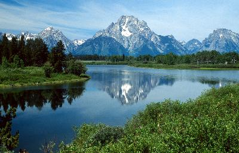

Welcome to Beartooth Hiking Company
Come enjoy the scenic views of this beautiful region!
We have plenty of hiking trails for hikers of all ages and comfort levels.

Open expanses of lush hills, idyllic rivers and majestic, snow-topped mountains
are only the beginning of your trip with Beartooth Hiking Company.
Some of our hiking trails include:
- Gardiner Lake
- Hellroaring Plateau
- The Beaten Path
- and many more...
More info on hike tours
| |
Length |
Difficulty |
Price |
| Gardiner Lake |
3 or 5 days |
Intermediate |
$40/day |
| Hellroaring Plateau |
2, 3, 4 days |
Easy |
$35/day |
| Beaten Path |
5-7 days |
Difficult |
$45/day |
*Note: there is a 50% surcharge for Sat/Sun hikes
More information the Beartooth Mountains in general can be found in
the Wilderness.